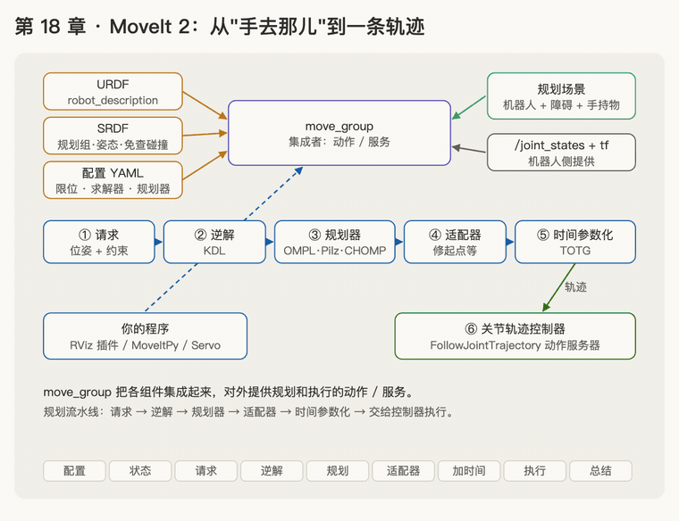

第 18 章 · MoveIt 2：机械臂运动规划
本地运行
git clone https://github.com/wikieden/ros2-from-scratch
cd ros2-from-scratch/code/notebooks
pip install jupyterlab torch numpy
jupyter lab ch18_time_param.ipynb也可以下载后直接用 VS Code 打开 .ipynb 运行。需要 GPU 的章节在 Colab 里选「代码执行程序 → 更改运行时类型 → GPU」。
本章回答：让机械臂"把手移到杯子上方 10 厘米、别撞桌子"，MoveIt 2 内部经过哪几步？SRDF 是什么？路径和轨迹有什么区别？规划完怎么交给第 16 章的轨迹控制器执行？实时遥操作 / 视觉伺服用什么？
讲解日期：2026-11-13 · 上一章：第 17 章 Nav2 · 下一章：第 19 章 仿真与部署
对应原文：ecosystem/moveit2_tutorials/doc/concepts/下的move_group.rst、motion_planning.rst、kinematics.rst、trajectory_processing.rst（路径相对ros2/materials/）
对应 study-plan 阶段 H1–H4，动手里程碑 R-M9（Panda 演示，MoveItPy 规划到目标位姿）。接 VLA 专题：规划方法与学习方法的对照。
本章缩写：SRDF = Semantic Robot Description Format（语义 / 机器人 / 描述 / 格式）；OMPL = Open Motion Planning Library（开放 / 运动规划 / 库）；RRT = Rapidly-exploring Random Tree（快速 / 探索 / 随机树）；CHOMP = Covariant Hamiltonian Optimization for Motion Planning（协变哈密顿优化运动规划）；Pilz（德国 Pilz 公司贡献的工业运动规划器：直线、圆弧等）；KDL = Kinematics and Dynamics Library（运动学与动力学库）；IK = Inverse Kinematics（逆运动学）；TOTG = Time-Optimal Trajectory Generation（时间 / 最优 / 轨迹 / 生成）；ACM = Allowed Collision Matrix（允许 / 碰撞 / 矩阵）；MTC = MoveIt Task Constructor（MoveIt 任务构造器）。全部缩写见 附录 · 缩写与术语表
本章先看总图，再分 3 步：
| 步 | 内容 | 状态 |
|---|---|---|
| 0 | 总图：move_group 的输入、规划流水线、执行 | ✅ |
| 1 | move_group 与配置：URDF + SRDF + 配置文件 | ✅ |
| 2 | 规划流水线：请求 → 规划器 → 适配器 → 时间参数化 | ✅ |
| 3 | 用起来：RViz 插件、MoveItPy、Servo、任务构造器 | ✅ |
讲解
总图 · move_group 是"集成者"

可交互版：animations/18-moveit-pipeline.html（内置浏览器：http://localhost:8340/18-moveit-pipeline.html）。
类比：搬家公司的路线规划员。 他手里有房子的户型图（URDF）、家具清单和哪些家具本来就挨着（SRDF）、现场照片（规划场景：哪里有障碍）。你说"把沙发搬到阳台"，他先想好哪些位置可行（逆运动学），再规划一条不撞墙的搬运路线（规划器），最后排好每一步的节奏（时间参数化），交给搬运工执行（轨迹控制器）。
第 1 步 · move_group 与配置
依据：materials/ecosystem/moveit2_tutorials/doc/concepts/move_group.rst（下称"move_group 文档"）。
move_group 是一个节点，把各个组件集成起来，对用户提供动作和服务（move_group 文档开头）。它从参数里拿三类信息：
| 信息 | 参数 / 来源 | 内容 |
|---|---|---|
| URDF | robot_description |
连杆、关节、外形（第 13 章） |
| SRDF | robot_description_semantic |
语义信息：规划组（"arm"包含哪几个关节）、末端执行器、预定义姿态（"ready"、"extended"）、哪些连杆对不用检查碰撞（本来就挨着的相邻连杆） |
| MoveIt 配置 | 各 YAML | 关节限位、运动学求解器、规划器、感知（八叉树）等 |
SRDF 和配置文件一般用 MoveIt Setup Assistant 生成一次（move_group 文档 Configuration 一节）。
它和机器人怎么通信（move_group 文档 Robot Interface 各节）：
- 读
/joint_states知道当前关节位置（自己不发布，要机器人侧提供，第 16 章的joint_state_broadcaster）； - 读 tf 知道机器人在世界里的位置（要
robot_state_publisher，第 13 章）； - 通过
FollowJointTrajectory动作把轨迹交给机器人上的控制器执行，动作服务器不由 MoveIt 提供，就是第 16 章的关节轨迹控制器。 - 维护一个规划场景（planning scene）：机器人当前状态 + 周围障碍物 + 手里拿着的物体（视为刚性连在机器人上）。
第 2 步 · 规划流水线
依据：concepts/motion_planning.rst（下称"规划文档"）、concepts/kinematics.rst、concepts/trajectory_processing.rst（下称"轨迹处理文档"）。
① 请求（规划文档 "The Motion Plan Request"）：目标可以是关节空间的一组关节角，或末端位姿；可加约束：位置约束（某连杆在某区域内）、姿态约束（比如杯子保持竖直，roll / pitch 有限）、可见性约束、关节约束、自定义约束。默认检查碰撞（含自碰撞和手持物体）。
② 逆运动学（IK）：目标是末端位姿时，要先求"关节角取多少，手才能到那儿"。默认插件用 KDL 的数值雅可比求解器（kinematics.rst），也可换其他插件。
③ 规划器：插件化。默认 OMPL（基于采样的规划器库，如 RRT 系列：在关节空间里随机撒点、连成不碰撞的树，直到连通起点和终点）；另有 Pilz 工业规划器（直线 LIN、点到点 PTP、圆弧 CIRC）和 CHOMP（基于优化，把一条初始路径往远离障碍、更平滑的方向推）（规划文档 "The Motion Planning Plugin"）。
④ 规划请求适配器：规划前后的预处理 / 后处理。比如 CheckStartStateBounds：真机关节读数略超出限位时，把起点修正到限位上，否则规划器会认为起点非法（规划文档 "Motion planning adapters"）。
⑤ 时间参数化：规划器给的是"路径"（一串关节位形，没有时间）；要变成"轨迹"（每个点什么时刻到、速度加速度多少），必须在速度、加速度限制下排时间。推荐算法 TOTG（时间最优轨迹生成），默认时间步长 0.1 秒，要求起止都静止；限值来自 joint_limits.yaml，会覆盖 URDF 里的值（轨迹处理文档）。规划文档也强调：move_group 输出的是轨迹而不只是路径。
⑥ 执行：轨迹经 FollowJointTrajectory 动作交给关节轨迹控制器，控制器在 1 kHz 回路里插值执行（第 15–16 章）。
第 3 步 · 用起来
RViz 运动规划插件（tutorials/quickstart_in_rviz/）：拖动末端的交互标记设目标，点 Plan、Execute。R-M9 先从这里开始。
MoveItPy（Python API）（examples/motion_planning_python_api/，取自教程代码）：
from moveit.planning import MoveItPy
panda = MoveItPy(node_name="moveit_py")
panda_arm = panda.get_planning_component("panda_arm") # SRDF 里定义的规划组
panda_arm.set_start_state_to_current_state()
panda_arm.set_goal_state(configuration_name="extended") # SRDF 里预定义的姿态
plan_result = panda_arm.plan()
if plan_result:
panda.execute(plan_result.trajectory, controllers=[])
目标也可以是 set_goal_state(pose_stamped_msg=..., pose_link="panda_link8")（末端位姿）或一个 RobotState。C++ 对应 MoveGroupInterface。
MoveIt Servo：实时伺服（examples/realtime_servo/realtime_servo_tutorial.rst）：不规划整条轨迹，而是持续接收指令并实时转成关节命令。接受三种指令：各关节速度、末端速度（Twist）、末端目标位姿。自带奇异点检查、碰撞检查（接近时自动减速）、平滑、关节限位。适合手柄遥操作、视觉伺服、以及学习型策略持续输出末端速度的场景。
MoveIt Task Constructor（MTC）（tutorials/pick_and_place_with_moveit_task_constructor/）：把"抓取放置"拆成一串阶段（接近、抓、提起、搬运、放下、撤回），每个阶段单独规划、整体搜索可行组合。
规划 vs 学习（和 VLA 专题对照）：
| MoveIt（规划） | VLA / 模仿学习（学习） | |
|---|---|---|
| 需要 | 精确的模型和场景（URDF、障碍物位置） | 大量示范数据 |
| 擅长 | 无碰撞保证、精确到位、可解释 | 接触丰富、可变形物体、难以建模的任务 |
| 输出 | 一整条时间参数化轨迹 | 每次一个动作块，闭环反复推理 |
| 常见结合 | 学习模型给出目标位姿 / 抓取点 → MoveIt 规划无碰撞路径；或策略输出末端速度 → Servo 做安全过滤 |
练习与作答记录
练习 18-1（第 1 步）：URDF 和 SRDF 各描述什么？为什么"相邻连杆不检查碰撞"要写在 SRDF 而不是 URDF？
- 作答：（待作答）
练习 18-2（第 2 步）："路径"和"轨迹"差在哪？哪一步把前者变成后者？
- 作答：（待作答）
练习 18-3（第 2 步）：MoveIt 规划成功，但执行时报"找不到 follow_joint_trajectory 动作服务器"。缺的是什么？由谁提供？
- 作答：（待作答）
练习 18-4（第 3 步）：你的 VLA 策略每 50 ms 输出一个"末端速度"。直接用 MoveIt 的规划（plan + execute）合适吗？用什么更合适，为什么？
- 作答：（待作答）
口诀
- 三份配置：URDF 长什么样，SRDF 怎么分组、哪些不查碰撞，YAML 管限位求解器规划器。
- 流水线：请求 → 逆解 → 规划器（OMPL 采样 / Pilz 工业 / CHOMP 优化）→ 适配器 → 时间参数化（TOTG）→ 动作交给 JTC。
- 路径没时间，轨迹有时间。
- 用法：RViz 点点点，MoveItPy 写脚本，Servo 做实时，MTC 搭任务。
本章复习卡片编号
R42–R43，见 ../review.md。
附录 · 延伸阅读
留给以后深入学习用，不影响本章主线。★ 是建议先读的。
materials/指ros2/materials/；不带前缀的路径在materials/ros2_documentation/source/下（design/、ecosystem/开头的在materials/下）；...表示省略了和上一条相同的目录。
推荐阅读
| 读什么 | 读哪里 | 读它为了什么 |
|---|---|---|
★ concepts |
materials/ecosystem/moveit2_tutorials/doc/concepts/ |
move_group.rst、motion_planning.rst、kinematics.rst、planning_scene_monitor.rst、trajectory_processing.rst、hybrid_planning/、moveit_task_constructor/。 |
★ tutorials |
.../doc/tutorials/ |
getting_started/、quickstart_in_rviz/、your_first_project/、visualizing_in_rviz/、planning_around_objects/、pick_and_place_with_moveit_task_constructor/。 |
★ motion_planning_python_api |
.../doc/examples/motion_planning_python_api/（MoveItPy）、realtime_servo/、setup_assistant/、urdf_srdf/、ompl_interface/、time_parameterization/、perception_pipeline/。 |
— |
| 论文 | Kavraki et al., "Probabilistic roadmaps for path planning in high-dimensional configuration spaces"（1996，PRM）；LaValle, "Rapidly-exploring random trees"（1998，RRT）；Ratliff et al., "CHOMP"（ICRA 2009）；Kunz & Stilman, "Time-Optimal Trajectory Generation for Path Following with Bounded Acceleration and Velocity"（RSS 2012，TOTG）。均未收录本地。 | — |
| 本仓库 | vla-deep-dive（动作块、学习型操作）；robot-system-architecture 第 2 章（运动学）、第 8 章（自主栈）。 | — |
数学原理
- 时间参数化（只看速度）：一段要走 \(\Delta q_j\)，关节 \(j\) 最快 \(v_j\)，这一段时长 \(\max_j |\Delta q_j|/v_j\)。
公式清单
| 公式 / 规则 |
|---|
| 路径 + 时间（速度、加速度限制下）= 轨迹 |
代码对照：把本章的数字用代码算一遍
纯 Python 模拟，不需要 ROS 2（原因见第 1 章这一节）。代码在仓库本地
ros2/solutions/chapter-code/ch18_time_param.py，配套测试tests/test_ch16_20.py；同名 notebook 在notebooks/ch18_time_param.ipynb（讲解和代码放在一起，一格一格跑）。Mac 上直接能跑：
bash cd ros2/solutions/chapter-code uv run python ch18_time_param.py # 一步一步打印 uv run pytest tests/test_ch16_20.py
讲义 ↔ 代码：
| 讲义 | 规则 / 数字 | 写法 | 跑出来 |
|---|---|---|---|
| 第 2 步 ④ 适配器 | 起点略超限位就截到限位 | check_start_state_bounds([1.0005, -0.2], ...) |
[1.0, -0.2] |
| 第 2 步 ⑤ 路径 | 只有位形，没有时间 | path |
3 个路点 |
| 第 2 步 ⑤ 时间参数化 | 排上时间变成轨迹 | time_parameterize(path, v_max) |
t = 0、0.5、2.1 秒 |
关键几行：
dt = max(abs(qb - qa) / v for qa, qb, v in zip(a, b, v_max)) # 最慢的关节决定这一段要多久
vel = [(qb - qa) / dt for qa, qb in zip(a, b)] # 这一段每个关节的速度
points[-1]["velocities"] = [0.0] * len(path[0]) # 终点停下
代码里才看得到的 3 件事：
- 这只是最简单的时间参数化：只管速度上限，不管加速度，所以速度在路点处会突变。MoveIt 推荐的 TOTG（Time-Optimal Trajectory Generation：时间 / 最优 / 轨迹 / 生成）同时满足速度和加速度上限，还尽量快。
- 第二段由关节 2 决定：关节 1 走 0.3 只要 0.3 秒，关节 2 走 0.8 要 1.6 秒，两个关节必须同时到，所以这一段 1.6 秒。
- 路径和速度上限都是编的。
自己改一改（不影响练习答案）：
- 把关节 2 的速度上限改成 1.0，看总时长；
- 在路径中间再插一个点，看
time_from_start怎么变。